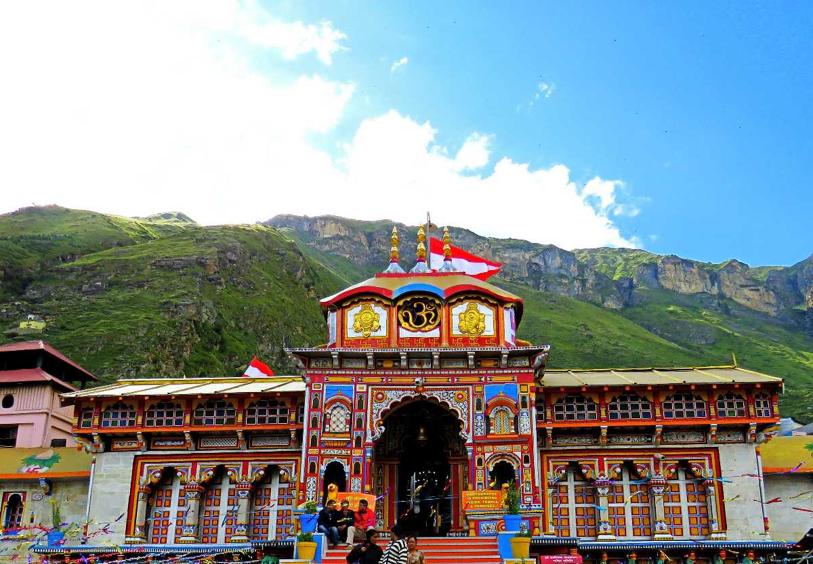

| Badrinath or Badrinarayan Temple is a Hindu temple dedicated to Lord Vishnu which is situated in the town of Badrinath in Uttarakhand, India. The temple and town form one of the four Char Dham and Chota Char Dham pilgrimage sites. The temple is also one of the 108 Divya Desams dedicated to Vishnu, who is worshipped as Badrinath—holy shrines for Vaishnavites. It is open for six months every year (between the end of April and the beginning of November), because of extreme weather conditions in the Himalayan region. The temple is located in Garhwal hill tracks in Chamoli district along the banks of Alaknanda River at an elevation of 3,133 m (10,279 ft) above the mean sea level. It is one of the most visited pilgrimage centers of India, having recorded 1,060,000 visits. The image of the presiding deity worshipped in the temple is a 1 ft (0.30 m), the black stone statue of Vishnu in the form of Badrinarayan. The statue is considered by many Hindus to be one of eight swayam vyakta kshetras, or self- manifested statues of Vishnu. |  |